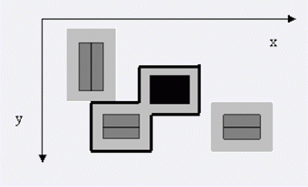

第一行是一个正整数m（1<=m<= 100），表示庄园中建筑的总数。
接下来的m行，每行描述了一个建筑对应的禁止矩形，
包括4个空格隔开的整数tx，ty，bx和by，(tx，ty)是矩形左上角的坐标，(bx，by)是矩形右下角的坐标。
所有的坐标值满足0 <= tx <= bx <= 10000和 0 <= ty <= by <= 10000。
第一个禁止矩形是包围主宅的。

一个正整数，即包围主宅的围墙的最小长度。
4
8 4 13 8
2 1 6 7
4 7 9 11
14 7 19 11
32